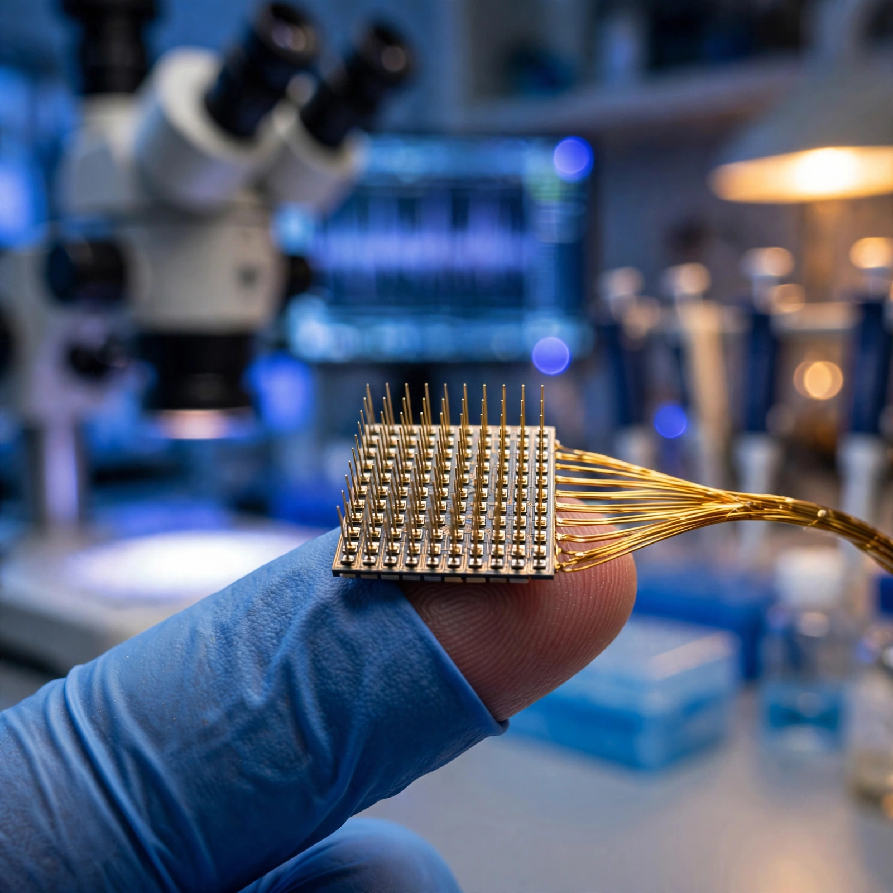

168 Million Pulses. Zero Emergencies. A Decade of Safety Data Rewrites the Bidirectional BCI Math.
Scientists delivered 168 million electrical pulses to five patients' brains over a combined 27 years with zero serious adverse events. Apply Poisson statistics and the FDA gets something it has never had: a quantified safety bound for writing sensory information directly into the human cortex.

Every brain-computer interface company on Earth has been attacking the same half of the problem. Record motor signals. Decode them. Move a cursor, steer a wheelchair, spell a sentence letter by letter across a screen controlled by nothing but intention firing through surviving neurons. It is the read side of the equation. As of this month, a Chinese company called Neuracle has a commercially approved device doing exactly that with eight electrodes while Neuralink has 21 patients enrolled in trials using 1,024.
But reading alone fails at the task that matters most to patients who have lost the use of their hands. A prosthetic grip that cannot feel what it holds will crush a cup, snap a pencil, and drop an egg before the patient even registers contact, because every millisecond of grip force calibration that an able-bodied hand performs automatically depends on sensory feedback from mechanoreceptors that a paralyzed patient no longer has a pathway to reach. A cursor steered by thought but lacking any sense of where it hovers will overshoot again and again, because the feedback loop that runs through an intact spinal cord simply does not exist after a cervical injury. Writing sensory information into the brain has always been harder than reading motor intent out of it, and until this week, nobody had published long-term safety data for the write side at all.
A study published July 16 in Science Translational Medicine by Charles Greenspon of the University of Chicago and Robert Gaunt of the University of Pittsburgh changes that calculus with a dataset nobody else in the field can match. Across five volunteers with spinal cord injuries, their team delivered 168 million pulses of electrical microstimulation to somatosensory cortex over a combined 27 years of implant time, with stimulation parameters varying across participants and sessions rather than following a single fixed protocol. Serious adverse events across all five participants and all 27 patient-years: zero.
Poisson math the FDA can actually use
Zero is not a number regulators can plug into a risk-benefit framework. What they need is a bound: a worst-case estimate of how often something bad could happen, derived rigorously from how many times it did not happen across a known volume of opportunities.
Poisson statistics provide exactly that tool. Observe zero events across n trials, and the 95% confidence upper bound on the true event rate is 3.0/n. Not an approximation but an exact result from the cumulative distribution.
Applied to Greenspon and Gaunt's dataset: 3.0 divided by 168,000,000 pulses gives a per-pulse serious-event ceiling of 1.79 × 10−8, which translates to fewer than one serious event per 56 million stimulation pulses at 95% confidence. To anchor that in human-scale terms: a patient receiving 300 stimulation pulses per session, five sessions per week, would cross the 56-million-pulse threshold after approximately 720 years of use. Reframe it in the units regulators think in, patient-years rather than individual pulses, and the upper bound becomes 0.11 SAEs per patient-year across those 27 combined years of cortical stimulation.
For context, cardiac pacemakers report major complication rates of 4.4% to 7.1% within the first year, driven primarily by lead dislodgement and infection. Cochlear implants, the most commercially successful neural prosthetic ever manufactured, carry surgical complication rates of 3% to 5%. Pitt-Chicago's BCI data does not yet have the sample size to claim statistical superiority over either device class, but it occupies the same safety neighborhood as technologies that have been commercially available for decades and that insurance companies reimburse without controversy. For a field seeking its first regulatory beachhead in the United States, landing in that neighborhood changes the conversation from "is this safe enough to try?" to "how do we scale it?"
Electrodes decay gracefully when you start with enough of them
Buried in Greenspon's supplementary data is a second number with enormous commercial implications: electrode longevity. Across all five participants, an average of 64% of implanted electrodes remained functional at study's end. One participant, the longest enrolled, retained 60% after a full decade inside the brain.
Fit an exponential decay model to that ten-year data point and you can project what happens to commercial arrays with vastly higher channel counts. If 60% survive at year ten, the annual decay constant is approximately 0.051, which gives a half-life of 13.6 years. Map that curve onto the devices competing for market share today:
| Device | Electrodes | Projected at Year 10 | Projected at Year 15 |
|---|---|---|---|
| Neuracle NEO | 8 | ~5 | ~4 |
| BrainGate Utah array | 96 | ~58 | ~44 |
| Neuralink N1 | 1,024 | ~614 | ~467 |
Higher-channel devices degrade in a way that looks like graceful attrition rather than catastrophic failure. A Neuralink N1 that has lost 40% of its electrodes over a decade still retains 614 functional channels, more than six times what any commercially approved device has ever offered. Electrode density functions as a safety margin, not a luxury. NEO's eight electrodes sit much closer to a functional cliff; losing three channels does not merely degrade performance but collapses the device's ability to resolve distinct motor intentions.
One caveat the authors flagged deserves emphasis: decay accelerated in later years for the longest-enrolled participant, suggesting that the true survival curve may be sigmoidal rather than purely exponential, with a stable early plateau followed by faster deterioration as glial scarring accumulates around the electrode tips. If that trajectory holds, the year-15 projections above are optimistic, and replacement intervals for chronic implants may be shorter than the half-life model predicts.
Sensations stay where you put them
Perhaps the most clinically significant finding has nothing to do with adverse events or electrode counts. It is topographic stability. When researchers stimulated electrodes in the hand region of somatosensory cortex, participants consistently reported sensations in their hands. Not their arms, not their faces, not some phantom region that drifted unpredictably as the brain reorganized. Hands. Consistently. Perceived location held steady across months and years of repeated sessions, which is exactly the stability guarantee that a bidirectional prosthetic limb controller would need before any patient could trust it to provide reliable tactile feedback during daily use.
Persistent sensations, moments when a tactile percept lingered after stimulation stopped, occurred approximately once per 23,000 trials, a 0.004% incidence rate. None caused pain. None required medical intervention. Every single instance lasted under ten seconds. Phantom limb sensations, a distinct chronic neurological condition rather than a direct analog, affect roughly 80% of amputees and are frequently painful, persistent, and resistant to treatment. The conditions are not perfectly comparable, but the contrast illustrates that BCI-evoked artifacts are far milder and far rarer than the neurological disruptions patients in this population already manage.
Following the cochlear implant clock
Cochlear implants offer the closest available trajectory comparison for what commercial adoption might look like once regulatory clearance arrives. First human implant: 1961. FDA approval: 1985. Cumulative devices implanted worldwide by 2020: approximately one million, spread across four decades of commercial availability.
Motor BCIs trace a strikingly similar developmental arc. BrainGate's first human trial opened around 2004. Neuracle received Chinese commercial approval in March 2026. Twenty-two years from first trial to first clearance, nearly matching cochlear implants' twenty-four. If adoption follows the same curve, rough order-of-magnitude projections suggest 50,000 cumulative implants in the first five years and 200,000 in the first ten, at a conservative device-plus-surgery cost of $50,000 consistent with where China appears to be pricing NEO given its rapid insurance integration. That extrapolation, which carries all the uncertainty of comparing two fundamentally different patient populations, represents perhaps a $2.5 billion market in five years and $10 billion cumulative by year ten.
Bidirectional capability changes the equation substantially, though it is worth noting that not every patient with a spinal cord injury prioritizes hand restoration; surveys consistently show that pain management, autonomic function, and bladder control rank as high or higher than upper-limb recovery for many patients. For those who do seek motor and sensory restoration, bidirectional BCIs enable prosthetic limbs with tactile feedback, and Greenspon's study validates the sensory half of that proposition for at least a decade of continuous use. Prosthetic hands that feel are worth more to those patients, their insurers, and device acquirers than prosthetic cursors that click.
Caveats and unknowns
Here is the strongest case against reading too much into these numbers. Five patients is not a safety study in any regulatory sense but a case series, the kind of preliminary evidence that opens a door but cannot hold it open under the weight of an FDA premarket approval submission. Poisson bounds are mathematically valid but clinically underpowered, and FDA typically requires hundreds or thousands of patient-years for Class III medical device approval rather than 27. Pacemaker infection rates of 1.4 per 1,000 device-years were established across datasets encompassing millions of implants over decades of post-market surveillance, datasets that took thirty years of commercial use and billions of dollars of installed base to accumulate. Nothing in the BCI field approaches that statistical mass.
Greenspon and Gaunt's data represents the best safety evidence that exists for intracortical microstimulation at chronic-use duration. It is simultaneously the only such evidence. Every number in this article, from the Poisson bounds to the decay projections to the market estimates, rests on five participants at two academic medical centers running trials with specific stimulation parameters, electrode materials, and surgical techniques that may not generalize to commercial devices built on different architectures. If patient six experiences a seizure or hemorrhage during chronic stimulation, the safety narrative recalibrates overnight. Bounds are real, but they are also thin.
Several methodological assumptions deserve transparent disclosure. "168 million pulses" aggregates heterogeneous exposures rather than counting replicate trials of a single intervention, which the Poisson bound does not distinguish. Electrode decay projections assume exponential behavior fitted to a single ten-year data point, and the actual trajectory is almost certainly nonlinear. Cochlear implant market comparisons assume BCIs will face similar insurance landscapes and patient willingness, but cochlear implants restore a sense most patients once had and lost while BCIs for paralysis create a capability some patients have never experienced; demand curves for restoration and augmentation are likely to diverge in ways no available model predicts well. Neuralink electrode projections assume equivalent tissue response across different materials and implantation techniques, which has not been established; flexible polymer threads may scar differently than rigid silicon arrays.
Where this leaves the field
For twenty years, brain-computer interfaces could read motor output from the cortex but could not safely write sensory information back into it. Greenspon and Gaunt's dataset closes that gap with empirical evidence at a scale nobody else possesses: 168 million pulses delivered across 27 patient-years with zero serious adverse events, a Poisson upper bound of fewer than one serious event per 56 million pulses, and electrodes losing roughly 4% per year while degrading gracefully in high-channel arrays that retain hundreds of functional channels after a decade of continuous use.
Bidirectional BCIs, devices that both decode motor intent and deliver sensory feedback, are no longer a theoretical proposition waiting for safety validation on the write side. If you work in rehabilitation engineering, prosthetics manufacturing, or neural device regulation, the practical implication is concrete and immediate: design for bidirectional from day one, because sensory cortical stimulation safety is no longer the bottleneck holding the field back. Integration is, which in practice means combining motor decoding and sensory encoding in a single implantable device, qualifying it under combined-use labeling that no regulator has written before, and manufacturing it at a price point that insurance systems in the United States, the European Union, and China will all cover. Whichever company solves them first, whether by building on the Pitt-Chicago architecture, adapting Neuracle's minimally invasive epidural approach, or threading Neuralink's high-density arrays into sensory cortex alongside motor cortex, will define what prosthetics look like for the next generation.
For patients and caregivers weighing BCI trial enrollment: Greenspon's data is the first evidence that sensory stimulation through implanted cortical electrodes is safe for years rather than months. It does not guarantee your experience will match these five participants, but it moves the risk calculus from "unknown" to "bounded," and in medicine, bounded risk is the difference between an experiment and a treatment.